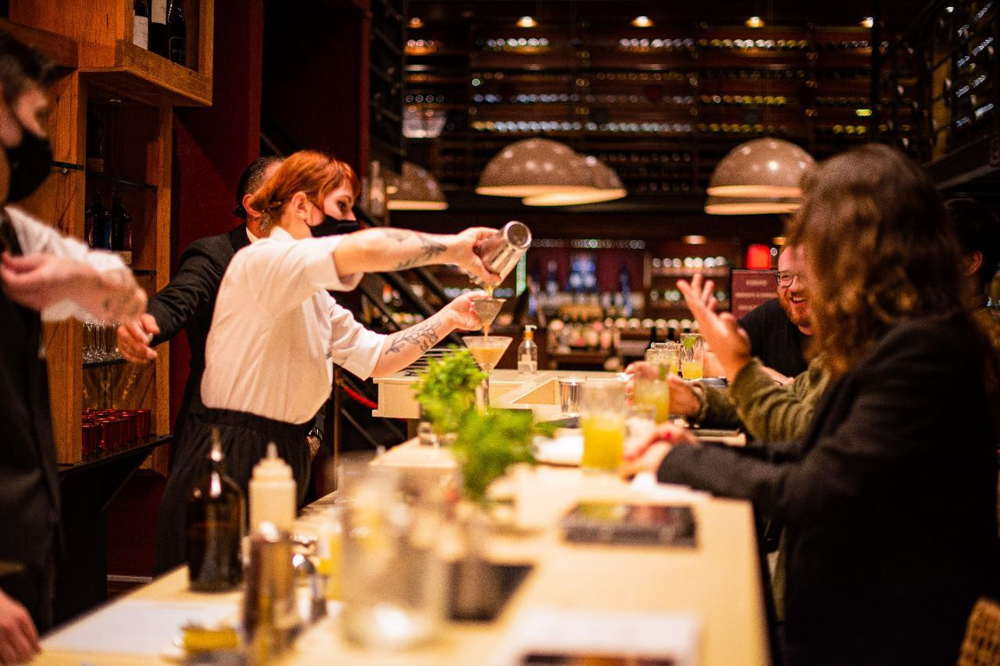
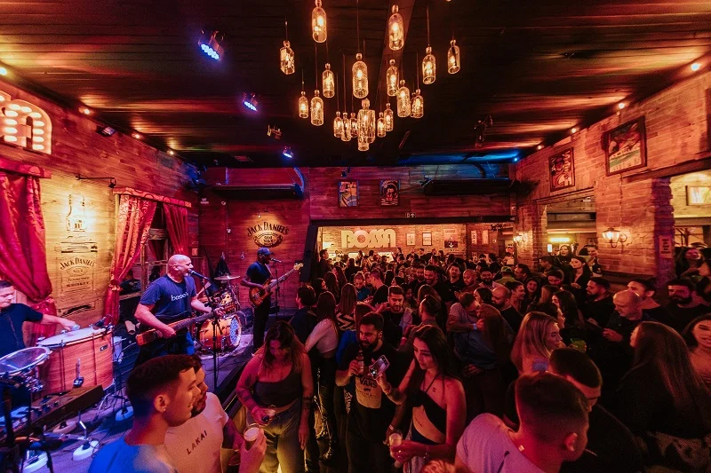
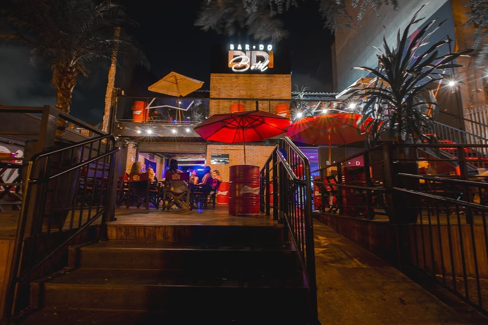
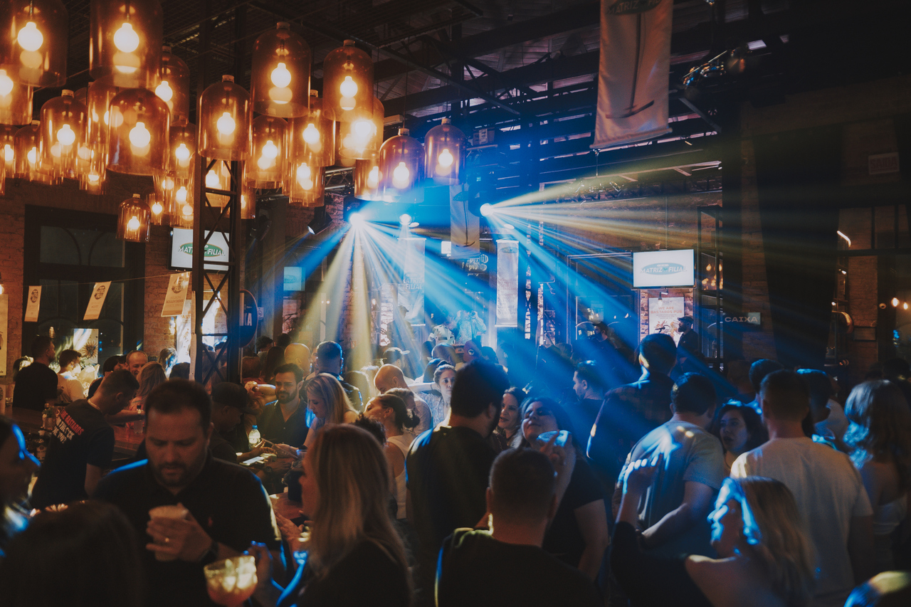
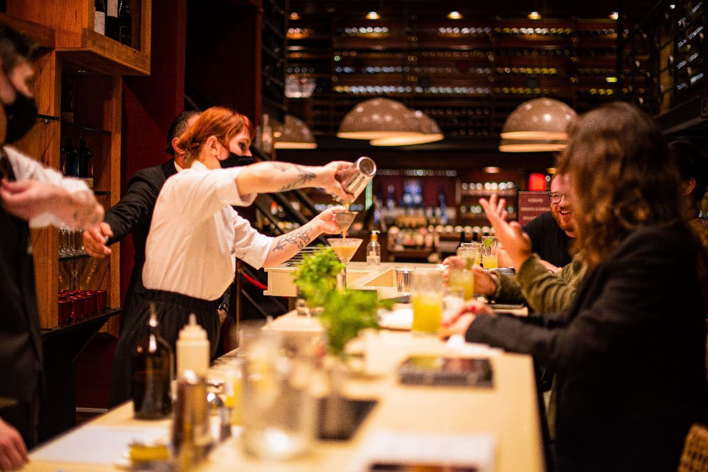
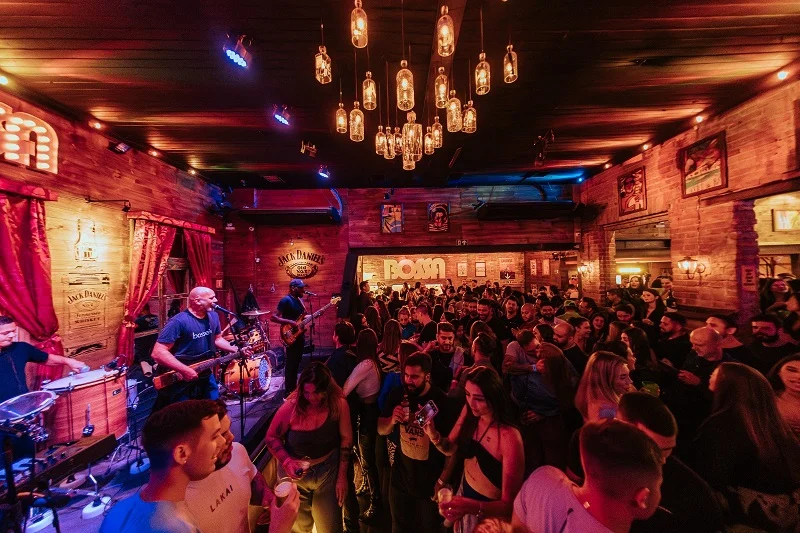
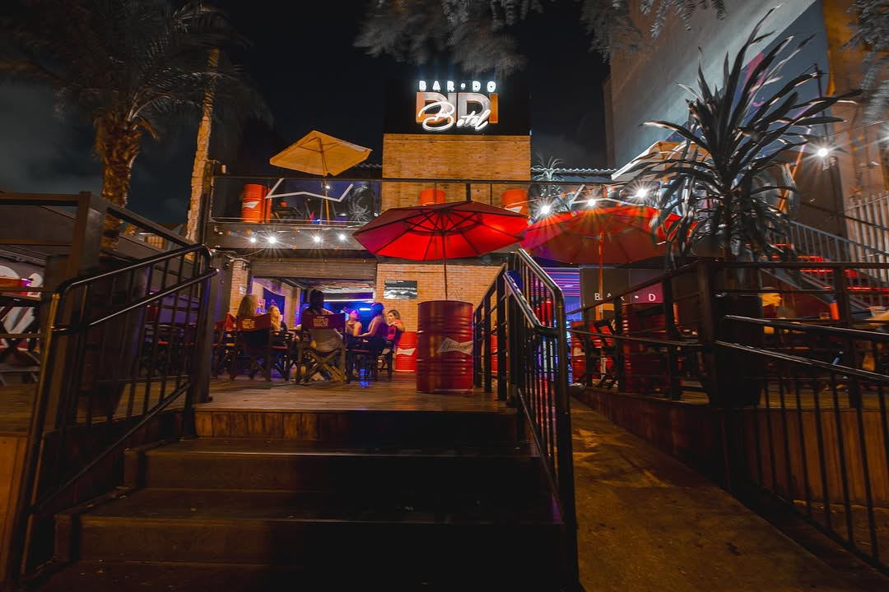
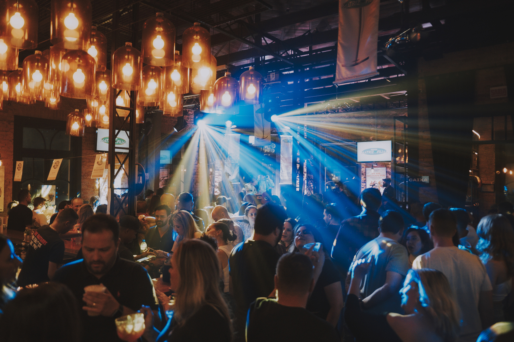

TOP 10 MELHORES BARES DE CURITIBA
Conheça os melhores bares de CWB
Ponto Gin
Descrição: Bar descolado e aconchegante localizado na Mercadoteca de Curitiba, especializado em drinks com gin e pratos diversos.
Sobre: Localizado no coração da cidade, é o ponto de encontro ideal para quem aprecia coquetéis exclusivos e um ambiente descontraído.
Visite o site
- Endereço: Alameda Pres. Taunay, 543 - Batel
- Horário: Terça a Quinta: 17h às 22h; Sexta e Sábado: 12h à 0h; Domingo: 12h às 20h
- Especialidades: Drinks com gin, cortes de carnes, massas e risotos.
+55 Bar
Descrição: Mistura de casa noturna, bar e restaurante japonês, com programação musical eletrônica e ambiente descontraído.
Sobre: Ideal para quem gosta de boa música e pratos criativos, com um toque da culinária japonesa.
Visite o site
- Endereço: R. Vicente Machado, 866 - Batel
- Horário: Terça a Sábado: 19h às 02h; Domingo: 18h às 00h
- Especialidades: Comida japonesa contemporânea, drinks exclusivos e música eletrônica.
Taj Bar
Descrição: Bar temático com decoração asiática, oferecendo coquetéis sofisticados e pratos da culinária oriental.
Sobre: Um bar elegante para quem aprecia coquetéis exclusivos e uma atmosfera oriental.
Visite o site
- Endereço: R. Bpo. Dom José, 2302 – Batel
- Horário: Segunda a Sábado: 17h às 00h
- Especialidades: Combinados, hambúrgueres gourmet, coquetéis e sobremesas.
We are Bastard Pub
Descrição: Bar moderno com música ao vivo, oferecendo hambúrgueres artesanais, porções e drinks variados.
Sobre: Ideal para quem gosta de um ambiente descontraído com boa música e comida deliciosa.
Visite o site
- Endereço: Av. Iguaçu, 2300 – Água Verde
- Horário: Terça a Sábado: 18h às 02h
- Especialidades: Hambúrgueres artesanais, porções, chopes e drinks.
 






